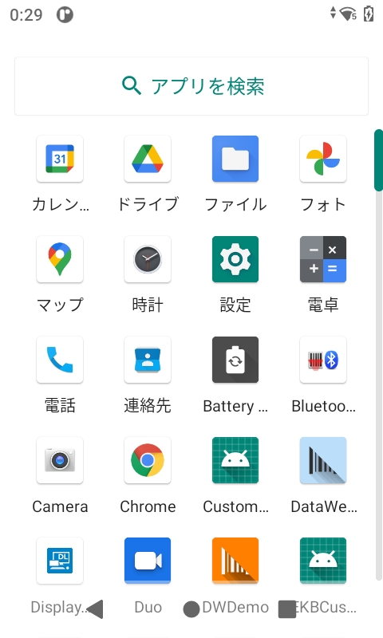
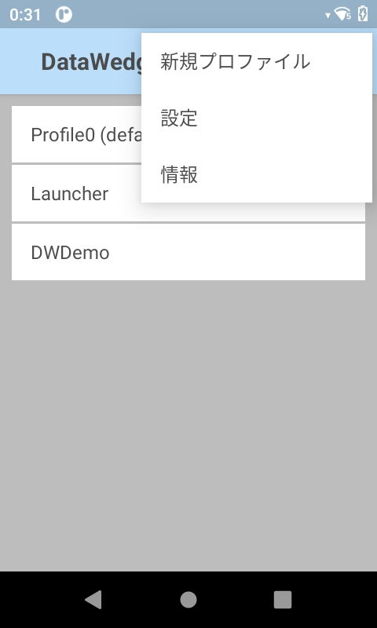
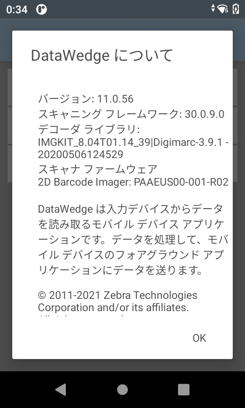

概要
Zebra DataWedge を使用すると、デバイス上の任意のアプリケーションで、さまざまな入力ソース (バーコード スキャナ、MSR、RFID、音声、シリアル ポートなど) からデータを取得し、簡単なオプションや複雑なルールに基づいて、必要に応じてデータを操作することができます。すべての Zebra Android デバイスですぐに使用できる DataWedge は、特定のアプリ内でデータ キャプチャ サービスを自動的に提供し、特定のスキャナ、リーダー、その他の周辺機器を使用し、また適正なアプリに対してデータを適切に形式化して送信するように、簡単に構成できます。
データをキャプチャするには、次の 2 つの方法があります。
- ノーコード - ユーザー インタフェースから構成された DataWedge プロファイルを使用してデータをキャプチャおよび処理することで、プログラミングやアプリの変更が不要になります。
- アプリケーション開発 - 次のいずれかのアプローチに基づいて、データ キャプチャ アプリを開発します:
- 最小限のコード - スキャン アクティビティやデータ処理を細かく制御することなく、ブロードキャスト レシーバを使用して、インテントからデータを取得する基本的なメソッド (Android の一般的なプログラミングで通常使用されます)。「基本インテントのサンプル アプリ」を参照してください。
- DataWedge API - 基盤となるハードウェアに関係なく、Android インテントを使用して、DataWedge の構成設定と操作をプログラムで制御、変更、照会します。
アプローチ、一般的な使用事例、および DataWedge の機能については、「ご使用の前に」ガイドを参照してください。
DataWedge インテント API の使用方法とベスト プラクティスについてのガイダンスは、プログラマ ガイドを参照してください。
DataWedge の使用方法と動作については、「使用上の注意と動作」を参照してください。
このガイド全体を通して表示されるサンプル アプリ画面の外観は、DataWedge のバージョン、Android のバージョン、および画面サイズによって異なることがあります。
重要な情報
NextGen SimulScan
NextGen SimulScan は、DataWedge および DataWedge インテント API を介してアクセス可能な内部スキャン フレームワークに移行された主要な SimulScan 機能で構成されています。その機能は、一部の Bluetooth スキャナ、および Android 8.x Oreo 以降を実行しているイメージャやカメラを内蔵したすべての Zebra デバイスでサポートされています。TC21 および TC26 などの Zebra Professional シリーズ デバイスでは、NextGen SimulScan は Mobility DNA Enterprise ライセンスを必要とします。NextGen SimulScan の機能 (以前は SimulScan の一部) は、次のとおりです。
- マルチバーコード - 1 回のスキャン セッションで複数の固有バーコードを取得し、スキャンしたデータを即座に配信するか、スキャンごとに指定されたバーコード数に到達した後で配信します。現在使用可能なオプションは次のとおりです。
- スキャンごとのバーコードの数 - スキャンするバーコードの固定数を設定します。
- 即時レポート - スキャン セッション内の固有バーコードを即座にレポートします(廃止予定の DataWedge レポートと混同しないでください)。
- デコードされたバーコードのレポート - 1 回のスキャン セッションでデコードされたバーコードをレポートします。
- ドキュメント キャプチャ - ドキュメント キャプチャ/NextGen SimulScan テンプレートに基づいてドキュメントをスキャンします。ドキュメント キャプチャ/NextGen SimulScan テンプレートの作成については、最寄りの Zebra 販売代理店にお問い合わせください。
詳細については、「Simulscan 移行警告」を参照してください。
音声入力オプションは廃止予定
次の音声入力機能は使用されておらず、今後のリリースで廃止されます。
- データ キャプチャ開始オプション - 開始フレーズ
- データ キャプチャ開始フレーズ
- データ キャプチャ終了フレーズ
代わりに、PTT ボタンを使用して音声キャプチャをトリガすることをお勧めします。
廃止されるレポート
DataWedge レポートは使用されておらず、2022 年初頭にリリースされる予定の Android 12 を実行している Zebra デバイスでは廃止されます(マルチバーコードの即時レポートと混同しないでください)。代替の方法として、サポートされているスキャナとパラメータを識別するために、次の DataWedge インテント API を使用することをお勧めします。
- スキャナの列挙 - デバイスで使用可能なスキャナのインデックスを生成します。
- 構成の取得 - 指定されたプロファイルから、
PARAM_LIST設定、またはサポートされているパラメータを取得します。値ペアのセットまたはプラグイン構成バンドルとして返されます。サンプル コードについては、「バーコード パラメータの取得」を参照してください。
サポート対象のデバイス
サポート対象のスキャナおよびイメージャ:
- DS2278
- DS3608
- DS3678
- DS8178
- LI3608
- LI3678
- RS507
- RS4000
- RS5000
- RS5100
- RS6000
言語サポート
DataWedge は、以下の言語にローカライズされたデバイス オペレーティング システムで実行することを承認されています。
- 英語
- フランス語
- ドイツ語
- イタリア語
- スペイン語
- 簡体字中国語
- 繁体字中国語
- 日本語
承認された言語の詳細について、またはローカライズされたオペレーティング システムのダウンロードについては、Zebra テクニカル サポートにお問い合わせください。
DataWedge 11.0 の新機能
- EMM (エンタープライズ モビリティ管理) システムを介して DataWedge をリモートで設定する新しい管理対象の構成。
- 自動グループ識別オプション (マルチバーコード付きドキュメント キャプチャの一部) を共通バーコードの動的数量グループからユーザー定義バーコード数量に変更しました。
- サポートされているデコーダーとデコーダーパラメーターを一覧表示する新しいデコーダーセクション。
- Android11スコープのストレージの実施には、展開構成の変更が必要です。
バージョン履歴
DataWedge 8.2 で追加
- 複数スキャナのサポートが追加され、手動で構成しなくても、さまざまなスキャナを同様に使用できるようになりました。
- 新しい DataWedge Intent API:
- 新しいドキュメント キャプチャの機能:
- 署名有無の検出により手書き署名の有無を検出します。プログラムによる検出については、「コンテンツ プロバイダの使用」プログラマ ガイドを参照してください。
- 全ドキュメント キャプチャによりドキュメント全体を画像としてキャプチャできます
- カメラ スキャナを使用したドキュメント キャプチャでは、画質が向上します。この機能のサポートは、ハードウェアとオペレーティング システムのバージョンによって異なります。詳細については、機能マトリックスの表を参照してください。
- キーストローク出力における新しい DataWedge キーボード オプションでは、キーストローク データをディスパッチするときに、DataWedge の「キーボード」(デフォルトのキーボードを置き換える DataWedge アイコン) が表示されます。
- ライセンスされていない機能の使用は、構成のインポート時にレポートされます。
DataWedge 8.1 で追加
- API の不正使用を防止する DataWedge Intent API へのアクセス制御。
- デバイスがサスペンド/画面オフ状態のときにスキャンをトリガする新しいトリガ ウェイクアップ & スキャン リーダー パラメータ。対応する新しい 構成の設定 API パラメータ。
- ライセンス画面の更新。
- DataWedge 8.1.45 の場合:
- バーコード入力の「スキャナ設定構成」セクションで使用可能な新しいスキャン モード オプション。
- SimulScan の名称をドキュメント キャプチャに変更。
- 基本マルチバーコードの名称をマルチバーコードに変更。
- UI の [ドキュメント キャプチャ テンプレート] の名称を [ドキュメント選択] に変更。
DataWedge 8.0 で追加
- 機器固有識別子 (UDI) バーコードのサポートは、BSP 10.12.13「Update 17」(以降) の Android 10 を実行している Zebra デバイスで復活しました。
- コンポーネント情報付きのセキュアな新しいインテント出力、および対応する新しい 構成の設定 API パラメータ。
- 画像などの大きなデータをスキャンするためのインテント出力内の DataWedge コンテンツ プロバイダを使用する新しいオプションと、対応する新しい 構成の設定 API パラメータおよび 「コンテンツ プロバイダの使用」プログラマ ガイド 。
- 従来の SimulScan 機能に代わる新しい NextGen SimulScan 構成であり、Zebra Professional シリーズ デバイスの場合は、ライセンスが必要。
- ドキュメント キャプチャ用の NextGen SimulScan テンプレートのインポート。
- バーコード入力用の押して継続エイム タイプと、それに対応する新しい 構成の設定 API パラメータ。
- 新しいインベントリ状態およびハードウェア キーの RFID 入力オプション。
DataWedge 7.6 で追加
- Dutch Postal 3S および Finnish Postal 4S デコーダのサポートを追加。
- 構成の設定 API による Finnish Postal 4S と Dutch Postal 3S の設定。
- マルチバーコード デコード用の新しいデコードされたバーコード レポート オプション。
- DataWedge のデフォルト汎用プロファイルである Profile0 では、RFID 入力は無効になっています。これまでは、デフォルトで有効になっていました。
- ユーザー インタフェースの外観と操作性の改善。「設定」および「DWDemo」を参照してください。
- スキャナ フレームワークが変更されたため、リーダー パラメータの [画像キャプチャ モード] オプションが削除されています。
- SimulScan API サポートは廃止予定 - SimulScan サポートは、Android 10 Q デバイス サポート以降 DataWedge から削除されます。
DataWedge 7.5 で追加
- マルチバーコードでサポートされるデータサイズおよびサポートされるバーコード最大数の増加。
- リンク プロファイル、ダイナミック出力、プリ フィルタ、ポスト フィルタをはじめとする、新しい RFID 入力パラメータ。
- OCR A、OCR B、MICR E13B、US Currency の各デコーダ、および光学文字認識デコード用の対応する OCR パラメータのサポートを追加。
- 一括展開用に CSP (構成サービス プロバイダ) を使用する新しいセキュアなリモート管理。
- 感度レベルを調整するための新しいプレゼンテーション モード パラメータ。
- フォアグラウンド アプリ内をナビゲートしたり、特定のキーを押す操作を行ったりするための新しい音声コマンド: TAB、ENTER、NEXT、PREVIOUS、ESC、CLEAR。
- 「voice_enter_command」(「voice_command_enter_enabled」に置き換え)、および「voice_tab_command」(「voice_command_tab_enabled」に置き換え) の 音声入力 パラメータは廃止予定。
DataWedge 7.4 で追加
- DataWedge 7.4.44 で導入された新しいエンタープライズ キーボード構成機能。
- DataWedge 7.5 以降のバージョンでは、Android Oreo (v8.0) 以降のみをサポートします。
- 新しいデータ キャプチャ開始オプションで選択した PTT (プッシュ トゥ トーク) ボタンによる音声キャプチャ アクティブ化の導入。
- バーコード リーダーと 構成の設定 API のための新しい DPM サポートの追加。
- DataWedge のプロファイル画面に表示される エンタープライズ キーボード オプションは、今後に予定されている機能です。
DataWedge 7.3 で追加
- 新しい Grid Matrix デコーダのサポートを追加。
- 構成の設定 API による Grid Matrix デコーダ パラメータの設定。
- 形式化された特別な領域 (署名など) を画像としてキャプチャする新しいデコーダ署名機能を追加。
- 新しい署名キャプチャ サンプルアプリ。
- キーストローク出力に新しいキー イベント オプションを追加。
- キーストローク出力パラメータは、構成の設定 API により切り替えることができます。
- Digimarc デコード用に背面カメラ サポートを追加。
- 新たに DS8178 Bluetooth スキャナをサポート。
- I2of5 用の新しい Febraban デコーダ パラメータをサポート。
- マルチバーコード スキャン モード用の新しい 即時レポート パラメータ。
- 画像をファイルとして配信する新しい SimulScan オプション。
- DataWedge 7.3.22 の新機能: RFID タグを読み取る新しい RFID 入力プラグイン機能。
DataWedge 7.2 で追加
- 画面デコード時間と透過度レベル用の新しい画面デコード通知 パラメータを追加。
- 新しい DotCode デコーダのサポートを追加。
DataWedge 7.1 で追加
- スキャン パラメータでのデコード フィードバック用に新しい画面デコード通知のサポートを追加。
- 音声 - データのキャプチャ用の音声入力が正式にリリースされました (非ベータ版)。
- 音声入力用の新しい終了検出タイムアウト オプション。
- 複数の Android ユーザー プロファイル用の新しいマルチユーザー サポート。
- 複数のプラグイン用の新しい SEND RESULT 結果コード。
- バーコード入力と SimulScan 入力用にハードウェア トリガを切り替える新しいハードウェア トリガ機能。
- SimulScan 入力でのハードウェア トリガをプログラムで切り替える新しい SimulScan トリガ モード
- 以下のための新しい SET_CONFIG/GET_CONFIG パラメータ:
- Data Capture Plus (DCP)
- SimulScan
- 磁気ストライプ リーダー (MSR)
- IP 出力
- 単一のインテントを使用する複数のモジュール (フル プロファイル)
- UDI データ出力用の新しいトークン
- バーコード入力用のハードウェア トリガ モードを切り替えるバーコード トリガ モード
DataWedge 7.0 で追加
新しい更新は DataWedge 6.9 と同じです。
- 音声 - データ キャプチャ用の新しい 音声入力 (ベータ版)。
- 新しいグローバル スキャナ設定では、サポートされているすべてのスキャナに汎用スキャナの構成を適用できます。
- 新しい文字セット構成は、バーコード入力用のデコーダ文字セットを調整するオプションです。
- 更新されたデコーダ選択は、以下をサポートします。
- GS1 Datamatrix
- GS1 QRCode
- DS2278 Bluetooth スキャナ用のサポートを追加。
その他の変更
- SET_CONFIG API のスキャナ入力パラメータのレイアウトを改善。
DataWedge 6.9 で追加
- 音声 - データ キャプチャ用の新しい 音声入力 (ベータ版)。
- 新しいグローバル スキャナ設定では、サポートされているすべてのスキャナに汎用スキャナの構成を適用できます。
- 新しい文字セット構成は、バーコード入力用のデコーダ文字セットを調整するオプションです。
- 更新されたデコーダ選択は、以下をサポートします。
- GS1 Datamatrix
- GS1 QRCode
- DS2278 Bluetooth スキャナ用のサポートを追加。
その他の変更
- SET_CONFIG API のスキャナ入力パラメータのレイアウトを改善。
6.8 で追加
- 外部スキャナの接続後や切断後に、スキャナ自動切り替えの動作を制御できるようになりました。
- DataWedge 設定により、プロファイルを無視するために無効にして、常にすべての機能を維持できるようになりました。
- 新しい SET_IGNORE_DISABLED_PROFILES API では、有効でないプロファイルへの切り替えを回避するように DataWedge を構成します。
- 新しい GET_IGNORE_DISABLED_PROFILES API では、IGNORE_DISABLED_PROFILES フラグのステータスを返します。
- 更新された SET_CONFIG API で以下がサポートされるようになりました:
- 高度なデータ形式
- Digimarc デコード
- 新しい SWITCH_SIMULSCAN_PARAMS API により、SimulScan パラメータの実行時の変更が可能です。
- プロファイル自動インポート機能が強化され、信頼性が向上するとともに、余分なコーディングが削減されます
その他の変更
SimulScan 入力プラグインのデフォルト テンプレートは現在、「Default - Barcode4.xml」です。
v6.7 で追加
このバージョンは、Android Lollipop 以降を実行しているデバイスのみをサポートします。
一度に複数のバーコードを同時取得するマルチバーコード入力をサポートしています。
拡張された inter-character delay 関数により、すべての文字またはマルチバイト文字に対してのみ遅れを指定できます。
ビーム タイマが時間切れになるか、バーコードがデコードされるか、読み取りがキャンセルされるまで、デコード セッションを継続する押して持続機能をエイム タイプがサポートするようになりました。
動的テンプレート パラメータにより、SimulScan 動的テンプレートを使用するときに、フォーム上でデコードするバーコード数 (1 ～ 99) を指定できます。
新しい IMPORT_CONFIG API では、インテントを使用して構成設定ファイルとプロファイル設定ファイルをインポートできます。
v6.6 で追加
新しいシリアル入力オプションにより、DataWedge で、シリアル ポートに接続されてデータ取得に使用されるスキャナまたはその他のデバイスの通信パラメータを指定できます。
インポート レポートは、インポートされたデータベースおよびプロファイルの結果を表示することにより、管理者がソースとターゲットの相違点を簡単に特定し、補正のための調整を行えます。
新しい SET_REPORTING_OPTIONS API では、インテントによりレポート機能を制御できます。
SET_CONFIG API は、単一のインテント アクションで複数のプラグインを構成するようになりました。
SWITCH_SCANNER API は、新しいエクストラによってわかりやすいデバイス名をサポートするようになりました。
どのバージョンがインストールされていますか?
デバイスにインストールされている DataWedge バージョンを確認する手順:
1.デバイス上のプログラム画面またはアプリドロワで DataWedge アイコンを探してタップします。DataWedge 6.x の起動プログラム アイコン
2.「3 本線」メニューをタップします。[DataWedge] メニューが表示されます。
3.[情報] をタップします。[DataWedge について] 画面が表示されます。以下の図で、DataWedge のバージョン番号が強調表示されています。Scanner Framework のバージョンも表示されていることに注意してください。
 バージョン番号を示す「DataWedge 情報」ボックス
4.デバイスの DataWedge バージョンがこのガイドのバージョンと異なる場合は、TechDocs タイル ページに戻り、DataWedge タイルのドロップダウン メニューから該当するバージョンを選択します。
Zebra サポート サイトにアクセスし、デバイス固有のインテグレータ ガイドをダウンロードして参照することもできます。
関連ガイド: